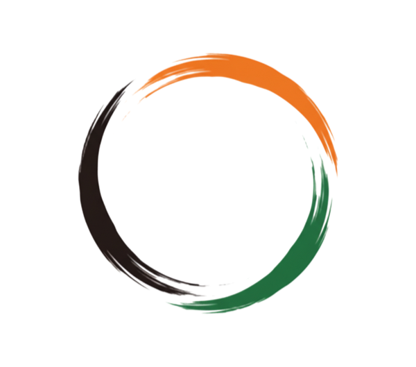

自分らしく生きよう
自分を大切にし、相手も尊重しよう。違いを受け入れ、楽しもう。

和会株式会社WAKAI CO., LTD.Philosophy
技術力と誠実な対応を両立し、
電気工事で好循環を生み出します。
私たちは、デジタルを活用して業務を効率化し、現場でのお客さまとのコミュニケーションと施工に最大限の力を注ぎます。
自分を大切にし、相手も尊重しよう。違いを受け入れ、楽しもう。
「ありがとう」を大切にしよう。NOが言える関係性になろう。
仕事も人生も無理せずに、一生懸命やってみよう。笑顔でいることは、最高のパフォーマンスにつながります。